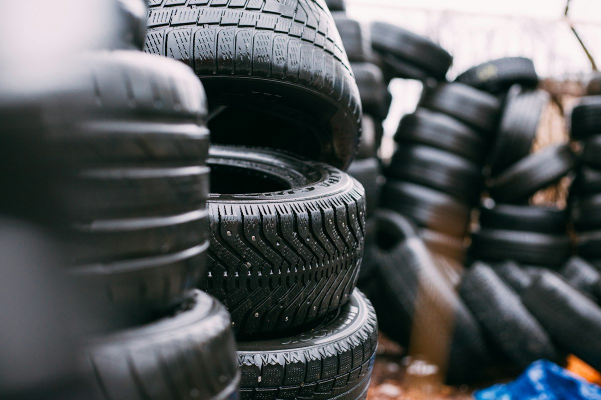

Canton’s Trusted Home for
All-Season & Performance Tires
Over 40 years of honest tire sales, Hunter computerized wheel alignments, ceramic brake services, and commercial fleet maintenance. Quality service done right the first time on West Tuscarawas.
Master Automotive Services in Canton
From passenger commuters to heavy commercial fleets, our ASE-certified mechanics deliver dealer-level quality without dealer pricing.

New & Used Tire Sales
Top name-brand tires (Goodyear, Michelin, Bridgestone, Continental, Cooper) mounted, balanced, and backed by lifetime rotations.
Browse Tires & Balancing →
Hunter 4-Wheel Alignment
State-of-the-art optical laser alignment cameras restoring precise caster, camber, and toe angles to stop uneven tire wear.
View Alignment Specs →Brakes & Suspension
Premium ceramic pads, rotor resurfacing, calipers, shocks, struts, ball joints, and steering tie rods for solid highway control.
Explore Brake Services →Honest Advice. Hometown Reputation.
For decades, families and business owners across Canton, Massillon, and Stark County have trusted Dan’s American Tire at 4570 Tuscarawas St W. We don’t upsell you services you don’t need — we give you straightforward recommendations backed by ASE certification.
- Hunter Engineering Equipment: Road Force balancers and laser alignment racks for precision accuracy.
- Commercial Fleet Priority: Dedicated rapid-turnaround bays for delivery vans and contractor trucks.
- Emergency Roadside Towing: Direct towing support to our Canton service bays when stranded.
- Better Business Bureau Accredited: Decades of verified community trust and fair pricing.